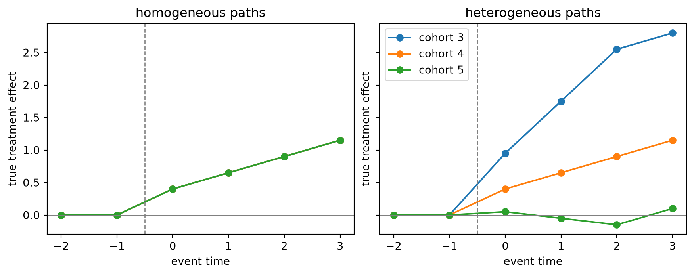

import matplotlib.pyplot as plt
import numpy as np
import pandas as pd
import crabbymetrics as cm
np.set_printoptions(precision=4, suppress=True)Joint Hypothesis Tests For Causal Models
Joint tests are useful causal diagnostics when the scientific question is not whether one coefficient differs from zero, but whether a whole block of model-implied deviations is needed. Two common cases are:
- treatment-effect heterogeneity in a Lin-style interacted regression;
- cohort-level dynamic treatment-effect heterogeneity in a staggered-adoption event study.
Both are linear-restriction problems. Estimate a model with the potentially heterogeneous terms included, then test whether those terms are jointly zero. In crabbymetrics, this is a fitted-estimator wald_test(...) call.
1 Case 1: Lin-Style Treatment Effect Heterogeneity
In a completely randomized experiment, a Lin-style specification augments the treatment indicator with covariates and treatment-by-covariate interactions:
\[ Y_i = \alpha + \tau W_i + X_i'\beta + W_i X_i'\gamma + \varepsilon_i. \]
The omnibus heterogeneity null is
\[ H_0: \gamma = 0. \]
If the true DGP has no explained heterogeneity, the joint test should usually not reject. If treatment effects vary with observed covariates, the same test should reject with enough signal and sample size.
def lin_design(x, w):
w_col = w.reshape(-1, 1)
return np.column_stack([w_col, x, w_col * x])
def fit_lin_case(gamma, seed=123, n=1200):
rng = np.random.default_rng(seed)
x = rng.normal(size=(n, 3))
w = rng.binomial(1, 0.5, size=n).astype(float)
beta = np.array([0.6, -0.4, 0.2])
tau = 1.0
y = 0.5 + tau * w + x @ beta + (w[:, None] * x) @ gamma + rng.normal(scale=1.0, size=n)
model = cm.OLS()
model.fit(lin_design(x, w), y)
# Coefficient order is [intercept, W, X1, X2, X3, W:X1, W:X2, W:X3].
r = np.zeros((3, 8))
r[:, 5:8] = np.eye(3)
test = model.wald_test(r, vcov="hc1")
return model.summary(vcov="hc1"), test
summary_hom, test_hom = fit_lin_case(gamma=np.array([0.0, 0.0, 0.0]), seed=10)
summary_het, test_het = fit_lin_case(gamma=np.array([0.7, -0.5, 0.4]), seed=11)
print("No heterogeneity DGP:")
print(test_hom)
print("\nHeterogeneous DGP:")
print(test_het)No heterogeneity DGP:
{'statistic': 1.7299603125675482, 'df': 3, 'p_value': 0.630293602835814, 'test': 'wald'}
Heterogeneous DGP:
{'statistic': 241.26837638836875, 'df': 3, 'p_value': 5.060774524142581e-52, 'test': 'wald'}In the first simulation, the interaction coefficients are nuisance parameters that are truly zero. In the second, they are the target of the diagnostic: a small p-value says the constant-treatment-effect summary is leaving systematic treatment-effect variation on the table.
This is the same logic as asking whether a richer regression has earned its extra interaction block. The test does not identify which covariate drives heterogeneity; it is an omnibus screen for whether the block is jointly useful.
2 Case 2: When Is A Pooled Event Study Good Enough?
The same idea applies to staggered-adoption panels. The simulation below is a compact DGP cooked for this vignette, inspired by the FTestEventStudy note rather than copied from the paper’s exact simulation code. A conventional two-way fixed-effect event study pools dynamic treatment effects across adoption cohorts:
\[ Y_{it} = \alpha_i + \lambda_t + \sum_{s \ne -1} \gamma_s \Delta^s_{it} + \varepsilon_{it}. \]
A saturated cohort-by-event-time regression estimates separate dynamic paths by cohort. The useful reparameterization from the FTestEventStudy note writes the saturated model as:
\[ Y_{it} = \alpha_i + \lambda_t + \sum_{s \ne -1} \gamma_s \Delta^s_{it} + \sum_{c \ne c_0} \sum_{s \ne -1} \delta_{cs} \Delta^{cs}_{it} + \varepsilon_{it}. \]
The common event-study coefficients \(\gamma_s\) describe the baseline dynamic path. The \(\delta_{cs}\) coefficients are cohort-specific deviations from that path. The diagnostic null is:
\[ H_0: \delta_{cs} = 0 \quad \text{for all included cohorts and event times.} \]
Failing to reject does not establish homogeneous effects or unbiased TWFE: the test can have low power. Rejection indicates that the fitted cohort paths are incompatible with a common path under the maintained specification.
The event-time tails are binned at -2 and 3, and every treated cohort is observed through event time 3. Unit-constant covariates are absorbed by unit effects and must not also enter the slope matrix. Version 0.9 rejects inference for that rank-deficient design instead of reporting misleading SEs.
def make_panel(heterogeneous=False, seed=2025):
rng = np.random.default_rng(seed)
n_per_group = 90
years = np.arange(9)
cohorts = np.array([3, 4, 5, 999])
rows = []
unit = 0
for g in cohorts:
for _ in range(n_per_group):
alpha = rng.normal(scale=0.7)
x = rng.normal()
for t in years:
treated = int(t >= g) if g < 999 else 0
rel = t - g if g < 999 else -999
base_effect = 0.0 if rel < 0 else 0.4 + 0.25 * min(rel, 3)
if heterogeneous and g == 3 and rel >= 0:
effect = base_effect + 0.55 * min(rel + 1, 3)
elif heterogeneous and g == 5 and rel >= 0:
effect = base_effect - 0.35 * min(rel + 1, 3)
else:
effect = base_effect
y0 = alpha + 0.15 * t + 0.25 * x + rng.normal(scale=0.8)
rows.append((unit, t, g, rel, treated, x, y0 + treated * effect))
unit += 1
return pd.DataFrame(rows, columns=["unit", "year", "cohort", "rel", "treated", "x", "y"])
def true_effect(cohort, rel, heterogeneous):
if rel < 0:
return 0.0
base_effect = 0.4 + 0.25 * min(rel, 3)
if heterogeneous and cohort == 3:
return base_effect + 0.55 * min(rel + 1, 3)
if heterogeneous and cohort == 5:
return base_effect - 0.35 * min(rel + 1, 3)
return base_effect
def plot_dgp(ax, heterogeneous):
rel_grid = np.arange(-2, 4)
for cohort in [3, 4, 5]:
effects = [true_effect(cohort, rel, heterogeneous) for rel in rel_grid]
ax.plot(rel_grid, effects, marker="o", label=f"cohort {cohort}")
ax.axhline(0, color="0.5", lw=1)
ax.axvline(-0.5, color="0.5", lw=1, ls="--")
ax.set_xlabel("event time")
ax.set_ylabel("true treatment effect")
ax.set_title("heterogeneous paths" if heterogeneous else "homogeneous paths")
fig, axes = plt.subplots(1, 2, figsize=(9, 3.5), sharey=True, constrained_layout=True)
plot_dgp(axes[0], heterogeneous=False)
plot_dgp(axes[1], heterogeneous=True)
axes[1].legend(loc="best")
plt.show()
def event_study_design(df, rel_min=-2, rel_max=3, baseline=-1):
work = df.copy()
work["rel"] = work["rel"].clip(rel_min, rel_max)
rel_values = [r for r in range(rel_min, rel_max + 1) if r != baseline]
treated_cohorts = sorted(c for c in work["cohort"].unique() if c < 999)
baseline_cohort = treated_cohorts[0]
parts = []
names = []
common_cols = []
kept_rel_values = []
for rel in rel_values:
col = ((work["cohort"] < 999) & (work["rel"] == rel)).astype(float).to_numpy()
if col.sum() > 0:
common_cols.append(col)
kept_rel_values.append(rel)
names.append(f"event_{rel}")
parts.append(np.column_stack(common_cols))
deviation_cols = []
deviation_names = []
for cohort in treated_cohorts:
if cohort == baseline_cohort:
continue
for rel in kept_rel_values:
col = ((work["cohort"] == cohort) & (work["rel"] == rel)).astype(float).to_numpy()
if col.sum() == 0:
continue
deviation_cols.append(col)
deviation_names.append(f"cohort_{cohort}:event_{rel}")
parts.append(np.column_stack(deviation_cols))
names.extend(deviation_names)
xmat = np.column_stack(parts)
# This balanced panel is ordered by unit then year.
panel = xmat.reshape(work.unit.nunique(), work.year.nunique(), -1)
within = panel - panel.mean(axis=0) - panel.mean(axis=1, keepdims=True) + panel.mean(axis=(0, 1))
assert np.linalg.matrix_rank(within.reshape(xmat.shape)) == xmat.shape[1]
fe = work[["unit", "year"]].to_numpy(np.uint32)
return xmat, fe, names, deviation_names
def fit_event_case(heterogeneous, seed):
df = make_panel(heterogeneous=heterogeneous, seed=seed)
xmat, fe, names, deviation_names = event_study_design(df)
model = cm.FixedEffectsOLS()
model.fit(xmat, fe, df["y"].to_numpy())
# FixedEffectsOLS coefficient order is exactly `names`; the unit and year
# fixed effects are absorbed rather than materialized as dummy columns.
name_to_pos = {name: j for j, name in enumerate(names)}
r = np.zeros((len(deviation_names), len(names)))
for row, name in enumerate(deviation_names):
r[row, name_to_pos[name]] = 1.0
return model.wald_test(r, vcov="cluster", clusters=fe[:, 0].astype(np.int64))
event_hom = fit_event_case(heterogeneous=False, seed=30)
event_het = fit_event_case(heterogeneous=True, seed=31)
print("Homogeneous cohort paths:")
print(event_hom)
print("\nHeterogeneous cohort paths:")
print(event_het)
Homogeneous cohort paths:
{'statistic': 9.853337175147075, 'df': 10, 'p_value': 0.45345349647312794, 'test': 'wald'}
Heterogeneous cohort paths:
{'statistic': 563.823771909727, 'df': 10, 'p_value': 9.85484480603194e-115, 'test': 'wald'}The homogeneous DGP shares the same dynamic treatment-effect path across cohorts; the heterogeneous DGP changes it. The reported Wald tests use unit-clustered covariance. These are two seeded illustrations, not a Monte Carlo estimate of test size or power.
The practical interpretation is deliberately modest:
- If the test rejects, the pooled TWFE/event-study summary is likely hiding cohort-level treatment-effect heterogeneity.
- Non-rejection is inconclusive about homogeneity, identification, and bias.
- Treat this as a specification diagnostic, not a rule that validates selecting a pooled estimator after a pretest.